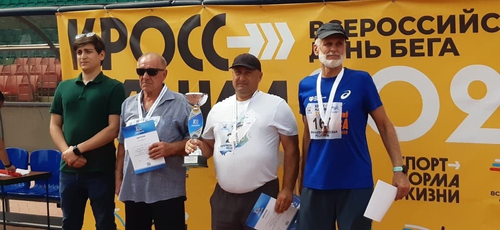
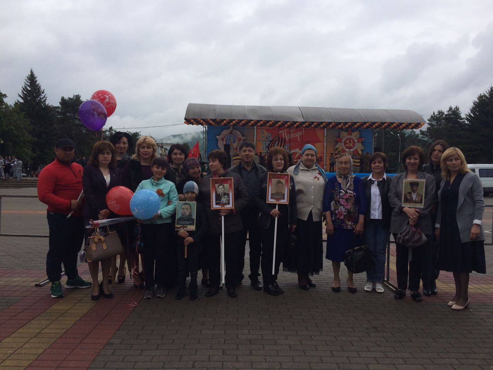
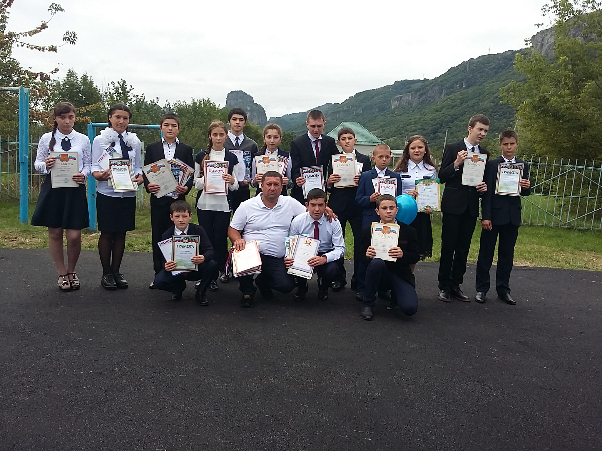
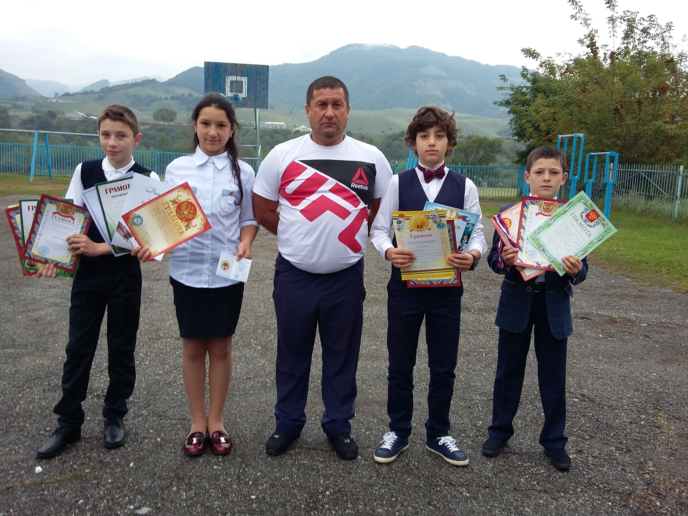
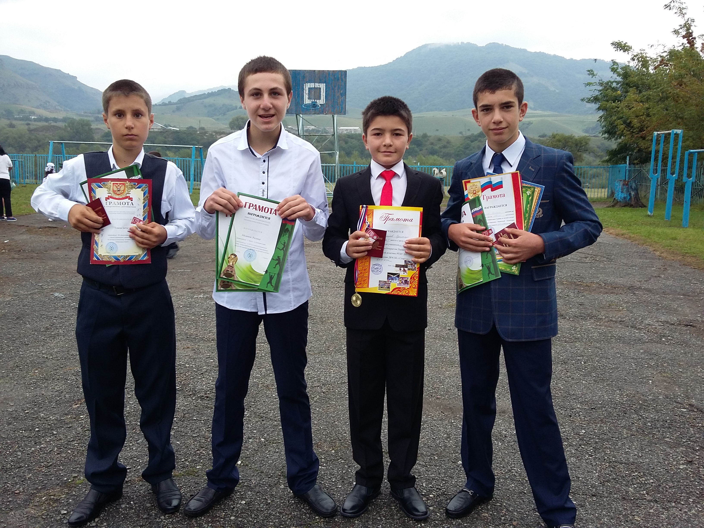

Учитель физической культуры · МБОУ КГО «СШ п. Орджоникидзевский им. Г. Д. Бутаева»

Здравствуйте! Меня зовут Байрамуков Исмаил Ибрагимович. Уже 31 год я преподаю физическую культуру и прививаю детям любовь к спорту и здоровому образу жизни.
Моя цель — не просто провести урок, а научить каждого ребёнка быть сильным, ловким и уверенным в себе. На моих занятиях всегда интересно и безопасно.
Специализация: лёгкая атлетика, ОФП.




Телефон: +7 (938) 036-55-13
Email: bajramukovismail8@mail.ru
Адрес: КЧР, пгт. Орджоникидзевский, ул. Прикубанская 46б